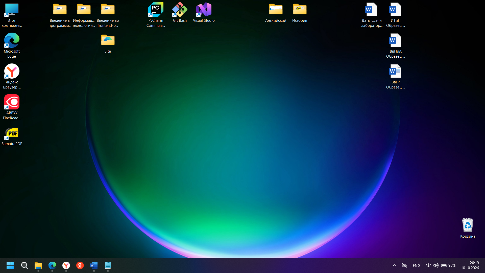

Рада приветствовать Вас на своем сайте! Здесь вы можете узнать обо мне, моих друзьях, увлечениях и учебной группе.
Мой ВКонтакте.
Я обучаюсь по специальности «Программная инженерия» . Меня привлекают информационные технологии, программирование и создание собственных работ.
Моя учебная группа: ПИЖ-б-о-26-2(2)Направление: Программная инженерия
Мой GitHub.

Данный сайт создан в рамках группы лабораторных работ по дисциплине «Введение во frontend-разработку». Здесь собрана информация обо мне, моих друзьях, увлечениях и учебной группе.
Подробнее обо мне вы можете ознакомиться на странице сайта «Обо мне».
Вернуться в начало страницы